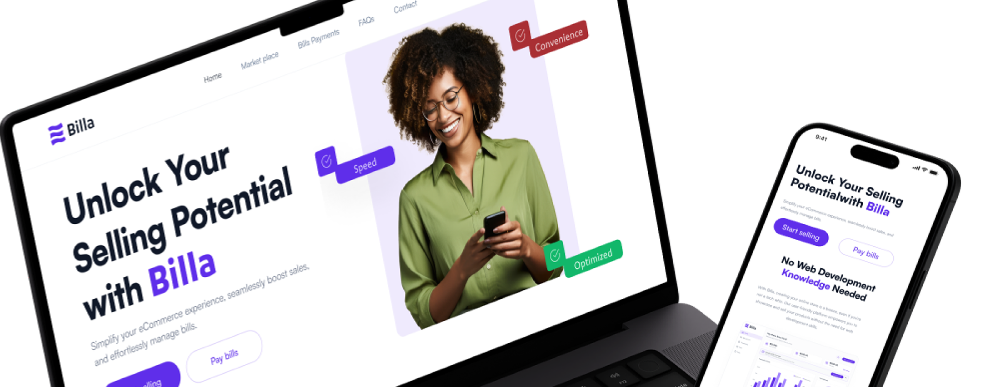
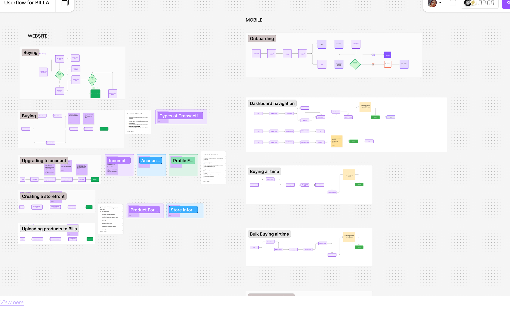

My Billa
Billa is a digital marketplace that enables sellers to create storefronts and sell digital products, while giving customers a simple way to purchase ebooks, tickets, airtime, data, and utility bills in one seamless experience.

Billa is a digital marketplace that enables sellers to create storefronts and sell digital products, while giving customers a simple way to purchase ebooks, tickets, airtime, data, and utility bills in one seamless experience.
Build a digital platform that lets users purchase multiple services — like airtime, data, and utility payments — all at once. This all-in-one experience, powered by the Billa Bucket, sets Billa apart from most platforms where users have to buy each service separately. The goal was to reduce friction, save time, and create a smooth, bundled checkout flow that feels intuitive and fast.
Users were used to making one-off purchases on other platforms. There was no easy way to buy everything they needed in one session, which led to repetitive, frustrating flows.
Research
I dug deep to understand what users really need, gathering insights that helped shape Billa into the right tool for them. Here's what I found:
.png)
User Persona
This research led to two key personas that reflect the traits and needs observed during the study.


Information Architecture
I mapped the site's structure to make sure marketplace browsing and bill payments felt like they belonged to one coherent platform, not two features bolted together.


User Flow
I designed the flow below to show how users complete tasks on the platform with ease. It highlights how straightforward and intuitive each step of the process is from buying and onboarding to uploading products and managing a storefront.

After launch, I conducted live usability testing with multiple users, observing how they completed tasks and gathering feedback on their experience. The sessions uncovered usability issues that were refined in later iterations. Stakeholders responded positively to the solution, and today Billa is actively used across multiple companies for airtime and data purchases.


![[Describe this screen]](./Images/Billa Store.png)
![[Describe this screen]](./Images/Bills payment-mobile.png)
![[Describe this screen]](./Images/Billa Mobile Cart.png)
Designing the Billa Bucket flow was both strategic and rewarding because it solved a real user problem that many platforms overlooked. It reinforced how thoughtful product design can simplify everyday tasks and create a smoother, more intuitive experience..